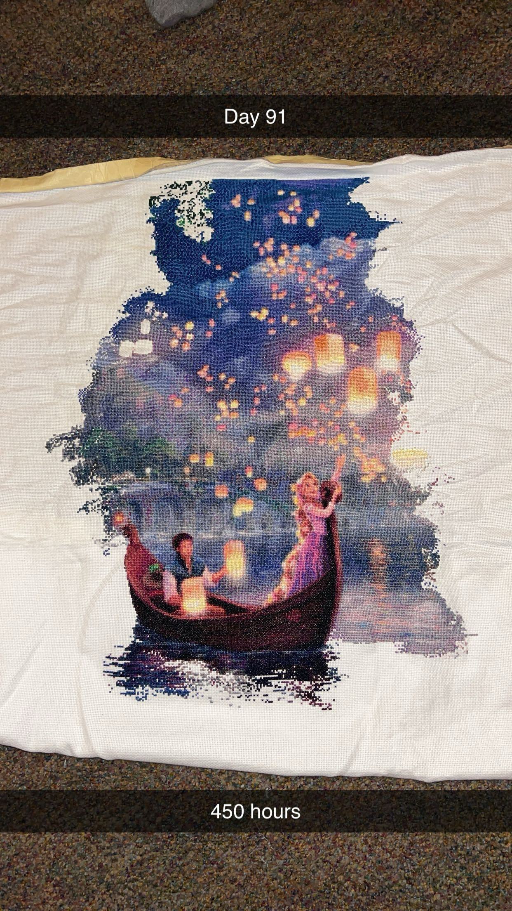

About Me
My Passion
I am very passionate about sewing. I love to do any kind of sewing whether it's machine work, clothing, embroidery, etc. My favorite is cross stitch. My current project is a Tangled themed cross stitch (if you want to see pictures, let me know).
I first learned to sew when I was a little kid. I did yarn cross stitch with my grandma using a plastic needle. I took to it immediately. Soon, I switched to actual needles and aida fabric. I learned to do counted cross stitch which is much harder.
The older I got, the more I learned. I started making clothing, quilting, pillows, embroidering towels, playmats, anything you can think of. This has paid off long term because I feel like I can sew anything. If a button falls off, I can sew it back on. If someones pants rip, I can sew them back together. It's a vital skill that I wish more people would learn about.
Narrative
A challenge I have faced would be balancing all the different aspects of my life. I am a very involved person and have a lot of things to juggle. On top of that, I have to make sure to take care of myself and give myself time to recover and relax.
To overcome this, I have learned to prioritize and say no when I need to. I have also learned to schedule my time better so that I can fit everything in without feeling overwhelmed. This has been a learning process and I am still working on it, but I feel like I am getting better at it.
Traveling Goals
- London
- Italy
- South Korea
- Australia
- New Zealand